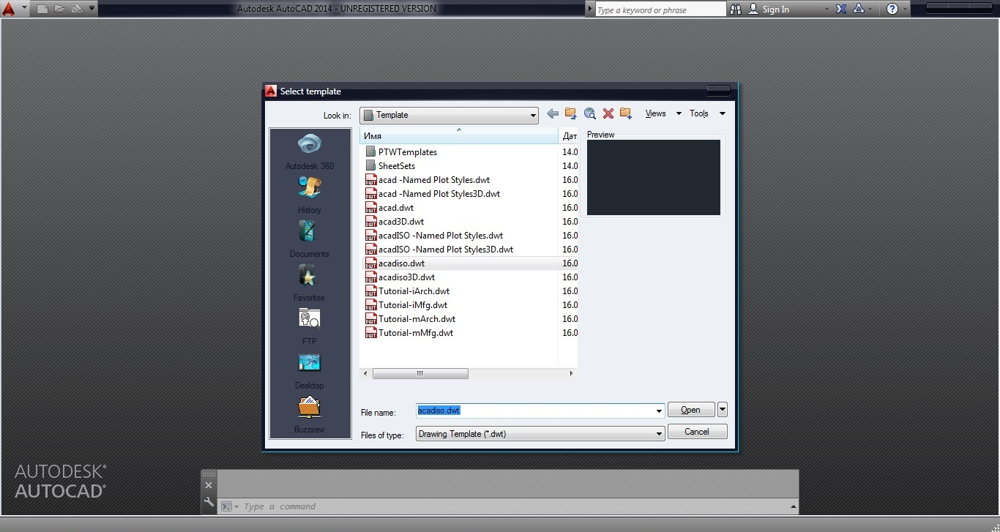

Урок 01. Знакомство со средой AutoCAD. Знакомство с интерфейсом, создание рабочего документа
Урок 01. Знакомство со средой AutoCAD. Знакомство с интерфейсом, создание рабочего документа
AutoCAD – система автоматизированного проектирования, разработанная компанией Autodesk, является системой CAD и включает в себя инструменты 2D 3D моделинга. Данный урок посвящен изучению интерфейса программы и опирается на самую последнюю версию AutoCAD 2014.

При создании нового рабочего документа, программа выдаст запрос на выбор шаблона оформления интерфейса. При этом стоит учесть, что AutoCad в одном рабочем файле способен содержать как плоские фигуры, так и объемные, а так же целые группы отдельных друг от друга 3D элементов, что дает ему некое преимущество по отношению с другими программами 2D и 3D моделинга. В данном уроке мы остановимся на оформлении которое в AutoCAD стоит по умолчанию – acadiso. Интерфейс программы состоит из:
{kind=link}
{kind=link}
1. Панель
быстрого доступа
2. Лента
3. Строка
состояния
4. Видовая
панель
5. Командная строка
6. Рабочее поле
1. Панель быстрого доступа
 По умолчанию включает в себя стандартный набор наиболее
часто используемых команд: «Создать», «Открыть», «Сохранить», «Печать»,
«Отменить» и «Повторить». Программа предоставляет возможность самостоятельно
задать команды и инструменты выводимые на панель быстрого доступа ?
По умолчанию включает в себя стандартный набор наиболее
часто используемых команд: «Создать», «Открыть», «Сохранить», «Печать»,
«Отменить» и «Повторить». Программа предоставляет возможность самостоятельно
задать команды и инструменты выводимые на панель быстрого доступа ?
2. Лента
Структура
ленты состоит из вкладок, содержащих несколько панелей каждая, которые в свою
очередь включают в себя инструменты и элементы управления. По умолчанию лента
расположена в верхней части окна. AutoCAD предоставляет возможность пользователю
самостоятельно редактировать внешний вид ленты, а также делать панели
плавающими, открепляя их от ленты. Основные
элементы Ленты
3. Строка состояния
 Строка состояния включает в себя значки для быстрого
доступа и управления чертежными средствами. При помощи контекстного меню,
открываемого щелчком ПКМ по полю строки, можно переключать вид отображения
строки – знаки или текстовые метки.
Строка состояния включает в себя значки для быстрого
доступа и управления чертежными средствами. При помощи контекстного меню,
открываемого щелчком ПКМ по полю строки, можно переключать вид отображения
строки – знаки или текстовые метки.
| Модель – отображение на экране чертежа пространства модели. | |
| Быстрый просмотр листов – просмотр листов и переключение между ними в чертеже. | |
| Быстрый просмотр чертежей – просмотр и переключение между открытыми чертежами и листами. | |
| Масштаб аннотаций – текущий масштаб отображаемых аннотаций. Масштаб видового экрана привязан к масштабу аннотаций. | |
| Видимость аннотаций – режим отображения аннотативных объектов. | |
| Автомасштабирование – обновление отображения аннотативного объекта при изменении масштаба. | |
| Рабочие пространства – переключение рабочих пространств и адаптирование их параметров. | |
| Блокировка отображения – блокировка текущего положения панелей инструментов и оконо. | |
| Навигационное колесо – перемещение и вращение вида в пространстве. Включает в себя курсорное меню. | |
| Ладонь – при зажатой ЛКМ дает возможность мышкой перемещать видовой экран в плоскости. | |
| Зум–приближение и отдаление вида, включает в себя несколько видов зумирования, выбираемых в подменю. | |
| Орбита – вращение видового экрана вокруг оси, включает в себя несколько видов вращения, выбираемых в подменю. | |
| Запуск анимации |
? Ниже
приведено описание основных инструментов строки
состояния В левой части строки находятся значки
управления и доступа чертежными средствами: «Привязка», «Сетка», «Вес линий»,
«Динамический ввод».
4. Видовая панель
 Видовая панель является модулем управления видового
окна и включает в себя: ?
Видовая панель является модулем управления видового
окна и включает в себя: ?
5. Командная строка
 ? Командная строка в текстовом
режиме отображает все производимые операции пользователя. А так же дает
возможность текстового ввода команд и использования подменю команд в текстовом
режиме.На этом знакомство со стандартным интерфейсом AutoCAD законченно, в
следующем уроке мы подробней рассмотрим работу с со стандартной системой
координат, создание пользовательской системы координат, а так же систему
динамического ввода.
? Командная строка в текстовом
режиме отображает все производимые операции пользователя. А так же дает
возможность текстового ввода команд и использования подменю команд в текстовом
режиме.На этом знакомство со стандартным интерфейсом AutoCAD законченно, в
следующем уроке мы подробней рассмотрим работу с со стандартной системой
координат, создание пользовательской системы координат, а так же систему
динамического ввода.